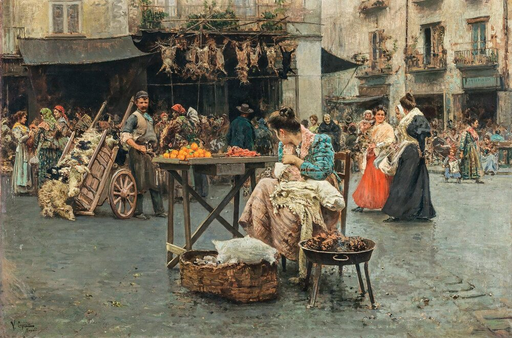

A2 · Work & Career
Opening a Bistro
One man's plan to open a small restaurant — what he has done, what he is doing now, and what comes next.
Play the audio and follow along, then read it again on your own. Tap or hover over a highlighted word to see what it means.
Daniel Brooks lives in Portland, Oregon. He is thirty-two, and for years he has wanted to open his own bistro — a small, relaxed restaurant with a short menu and good coffee.
Daniel loves food. He cooks at home for his friends and family, and every weekend he tries a new recipe. Last month he decided it was time to stop dreaming about the idea and start working on it.
Right now he is planning everything carefully. First, he needs a location. He is looking for a small space downtown, on a street where people already walk to work. Last Saturday he visited three places. One of them was perfect, but the rent was too high. He is now thinking about a second space, which costs less and has big front windows.
He is also spending a lot of time on the menu. He wants simple dishes made with fresh ingredients — salads, sandwiches, a pasta of the day — plus breakfast and coffee. For dessert he is planning cakes and cookies. Last week he tested a new chocolate cake on his family. They loved it, so it is going on the menu.
Hiring people is the part that worries him most. He knows he cannot run a restaurant alone. He needs a cook, someone to serve customers, and someone to help clean at the end of the day. He is looking for people who are friendly, who work hard, and who are good with customers. Yesterday he interviewed two cooks. He is still deciding between them.
These days he gets up at five. He writes down ideas, calls suppliers, and drives out to the farmers market to talk to growers about prices. On Tuesdays he visits a bakery on the east side to taste their bread. He is excited, but he is nervous too, because there is still a great deal to do and the money will not last forever.

In a few months, if everything goes well, Daniel hopes to open the doors and welcome his first customers. He thinks his bistro will become the kind of place where people sit for an hour, eat something good, and talk. His family and friends believe he can do it — they have watched how hard he is working.
Key Vocabulary
- a bistro a small, informal restaurant
- rent the money you pay every month to use a building
- downtown the central business area of an American city
- to hire to give someone a job
- a supplier a company or person who sells you what your business needs
- an ingredient one of the foods used to make a dish
- to be good with customers to deal with customers in a friendly, effective way
Opening a Bistro — A2 · Work & Career · Renan the Teacher, English Language Academy · https://renangrossi.github.io/englishclasses/reading/a2/dream-bistro.html
Interactive Exercises
Practice
Complete each exercise, then click Submit to see your score and an explanation for every answer.
Speaking & Writing
Discussion
There are no right answers here — use these to practice speaking, or write a short answer to each.
- If you opened a small restaurant, what three things would be on the menu, and why?
- Daniel says hiring is the hardest part. What would worry you most about starting a business?
- Describe something you are working on right now, and something you finished last month. Use the present continuous and the simple past.
- Write about 80 words describing a small business you like near your home. What does it do well?